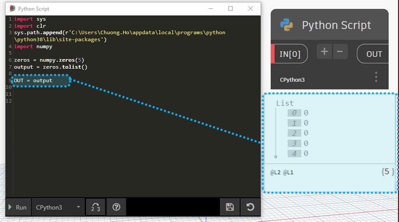

Numpy
Contents
11.3. Numpy#
NumPy is a library for the Python programming language, adding support for large, multidimensional arrays and matrices, along with a large collection of high-level mathematical functions to operate on these arrays.
{kind=link}
11.3.1. Install#
Use command to install library. Because I am using a lot of python versions on my machine to work( 3.8.3, 3.9.6, 3.10 ), so I will use this command to install Numpy correctly with working version of python.In this example, I using python 3.8.
py -3.8 -m pip install numpy
Note
If on your machine this is installing python for the first time and using only one version, use the shortened command below to install NumPy. They are similar to the above command.
pip install numpy
Check folder path installed by command in Windows PowerShell
python
import sys
sys.path[5]
{kind=link}
Fig. 11.9 Check Path Installed Package Python#
Finally, you should make sure all functions and Numpy have installed successfully.
{kind=link}
Fig. 11.10 Numpy Package Installed#
11.3.2. Start with Numpy#
Replace path lib with path in your computer before run script.
import numpy as np
zeros = np.zeros(5)
zeros.tolist()
[0.0, 0.0, 0.0, 0.0, 0.0]
In Dynamo scripts, you need to set OUT to see output
import sys
import os
#import System
#path_local = System.Environment.GetFolderPath(System.Environment.SpecialFolder.LocalApplicationData)
sys.path.append(r'C:\Users\Chuong.Ho\appdata\local\programs\python\python38\lib\site-packages')
import numpy as np
zeros = np.zeros(5)
OUT = zeros.tolist()
Result:

Download:
https://github.com/chuongmep/Awesome-Dynamo/blob/master/files/demonumpy.dyn
11.3.3. Resolve problem with install version#
11.3.3.1. Module Not Found Error#
Module Not Found Error": No Module "numpy" [File "<string>"], line1 in <module> \n.
{kind=link}
Fig. 11.11 No Module “numpy” …#
Solution:
Check pip to install or append package from python path
import sys
sys.path.append(r'C:\Users\Chuong.Ho\appdata\local\programs\python\python38\lib\site-packages')
11.3.3.2. NumPy version install not correct.#
Solution:
Uninstall NumPy
py -3.8 -m pip uninstall numpy
Reinstall again with correct version of NumPy.
py -3.8 -m pip install numpy==1.18.1